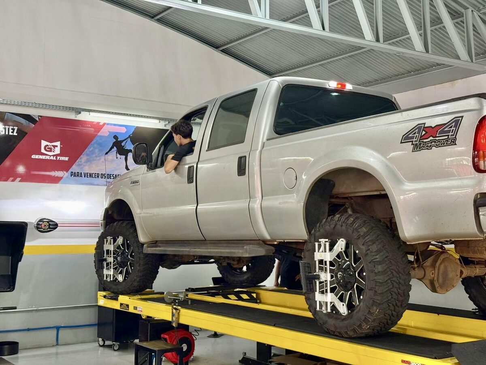

Pneus: Continental, General Tire e Barum
O pneu é o único contato do carro com o chão. Como revenda oficial Continental, entregamos a medida certa para o seu uso e a freada previsível que só marca de verdade oferece.
- Venda e montagem com alinhamento e balanceamento
- Orientação da medida correta (manual/etiqueta da montadora)
- Rodízio e calibragem para o pneu durar muito mais